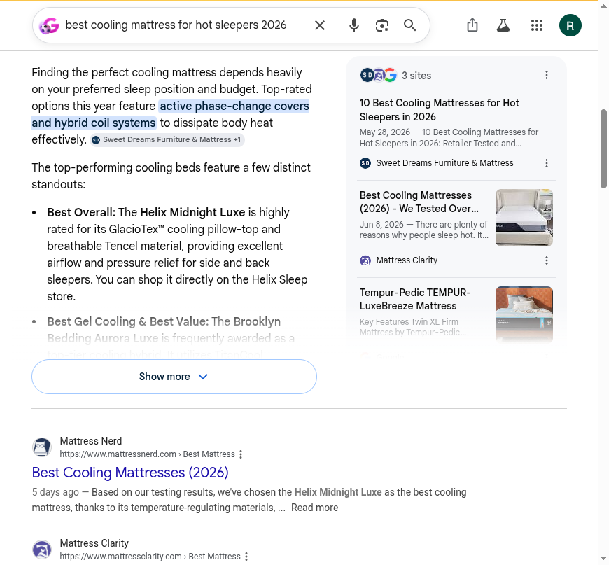

Blackwell Enterprises
An external audit of how AI engines and search see GhostBed today. And what we would do about it.
We graded GhostBed on five dimensions of how AI engines and search treat the brand. Each dimension is scored 0 to 100 against observed behavior across AI answer engines, the category listicles those engines cite, third-party reputation sources, the brand's own indexed pages, and the agent-commerce surface. Competitor scores are our estimates from the same public signals. Composite is the simple average.
GhostBed has the best agent-commerce plumbing in its competitive set and one of the cleaner product-schema layers, yet it is the set's least visible brand in the AI answers that sell mattresses. Transactability, at 84, leads Saatva, Purple, and Nectar, none of which expose a live agent endpoint. The two dimensions that decide whether an engine ever names GhostBed to a new shopper, recommendability (38) and reputation (48), are the lowest. The rails are ready. The engines never route a buyer onto them.
| Dimension | GhostBed | Saatva | Purple | Nectar | What it measures |
|---|---|---|---|---|---|
| Discoverability | 64 |
74 | 80 | 64 | Entity presence, agent discovery files, crawler access, third-party listings |
| Quotability | 70 |
66 | 74 | 62 | Schema depth, structured product and policy data, accuracy in machine-readable form |
| Recommendability | 38 |
90 | 76 | 82 | Inclusion in AI category recommendations and the listicles engines cite |
| Transactability | 84 |
46 | 46 | 46 | UCP and MCP endpoints, payment handlers, agent-readable pricing |
| Reputation | 48 |
84 | 70 | 68 | Review aggregator presence and rating, sentiment, links from the entity to that reputation |
| Composite | 61 (C) | 74 (C) | 70 (C) | 64 (C) | GhostBed trails the set average by about 9 points, all of it on recommendability and reputation, while leading every competitor on the agent-commerce layer. |
Grading scale: A 90+, B 75 to 89, C 60 to 74, D 50 to 59, F below 50. Competitor scores are estimates from observed public signals, not a full audit of those brands. Method and queries in the methodology section.
GhostBed is an established cooling-mattress brand: a decade in market, a Venus Williams signature line, Costco and Amazon distribution, and a Shopify store that already runs the modern agent-commerce rails most brands have not built. The product itself reviews well. The problem is upstream of all of it. When we asked AI answer engines for the best cooling mattress, GhostBed's own category, it was not named once. Saatva, Nectar, Purple, and Helix were. The checkout an AI agent would use is live and correct. The engine never sends a buyer to it.
Six findings, ordered worst first. The sixth is a strength.
Organization in GhostBed's schema carries sameAs: none, so nothing connects the brand to any of it.Organization, WebSite, or Brand entity, and no server-rendered h1. Purple ships all of it.Article or FAQPage schema, and an llms.txt that by its own text only "mirrors" the agent file rather than mapping any of it.Product, Offer, and AggregateRating. There is no WebSite, BreadcrumbList, or FAQPage, so an engine can read a price but not the trial or warranty terms.agents.md, and an agentic-discovery sitemap. Saatva, Purple, and Nectar expose none of it. This is the asset to build on.Finding 1 of 6 · Critical
AI answer engines are now where many mattress shoppers start. They do not browse; they ask "what is the best cooling mattress" and get back a short, synthesized list. We ran the full six-engine battery, each in two passes: from the model's own memory with web search off, then with live web retrieval on. The query was GhostBed's own category, "best cooling mattress for hot sleepers 2026." GhostBed was named in one of nine passes.
| Engine | From memory (search off) | Live web retrieval (search on) |
|---|---|---|
| ChatGPT | not named | not named |
| Claude | names GhostBed Luxe | not named |
| Gemini | not named | not named |
| Perplexity (incognito) | retrieval only | not named |
| Copilot | retrieval only | not named |
| Google AI Overview | retrieval only | not named |
Where GhostBed's homepage title is "Shop GhostBed: Luxury Cooling Mattresses & Bedding," every live answer went to other brands. Helix, Brooklyn Bedding, Saatva, and Nectar recur across all six engines.
Google AI Overview, live retrieval: "best cooling mattress for hot sleepers 2026"
"Best Overall: The Helix Midnight Luxe is highly rated for its GlacioTex cooling pillow-top. Best Gel Cooling and Best Value: The Brooklyn Bedding Aurora Luxe."

Google AI Overview for GhostBed's own category. GhostBed is absent from the recommendation; its only appearance on the page is a Home Depot shopping card at 3.5 stars. Captured June 22, 2026.
The sharpest signal is the split inside a single engine. Asked from memory, Claude names "GhostBed Luxe, built around a cooling cover, their coldest model." The same Claude, asked to retrieve the live web, drops GhostBed and returns Helix, Brooklyn Bedding, Saatva, Nectar, and Leesa. The brand sits in the model's knowledge. It is missing from the sources the model recommends from, which is the exact layer this engagement fixes.
Why this is the most expensive finding in the deck
Category recommendation is the moment of intent, a shopper deciding which brand to buy. GhostBed being absent there is worth more than any single ranking position, because the engine is making the choice on the shopper's behalf and never offers GhostBed as an option. A strong product and a live checkout cannot rescue a recommendation they are never part of. And the gap compounds: each engine that leans harder on live retrieval reads the same listicles and reaches the same competitors.
The fix. Recommendability is downstream of the next four findings. A machine-readable entity, a reputation linked to it, and structured comparison content are what pull a brand into these answers. We also map the specific category sources these engines cite ("best cooling mattress," "best online mattress") and build the placement plan to earn GhostBed into them.
Finding 2 of 6 · Critical
GhostBed's product pages advertise a 4.8 rating over 10,223 reviews. That number is GhostBed's own first-party review widget. The reputation an independent engine reads off the open web is a different number, and nothing in GhostBed's schema links the two.
// On-site, in GhostBed's own product schema (Luxe Hybrid PDP) AggregateRating: 4.8 from 10,223 reviews (first-party widget) Organization "GhostBed": sameAs = none // Off-site, the corpus an engine actually cross-references Trustpilot: 3.5 / 5 (172 reviews, 82% one-star all time) BBB (GhostBed): 1.61 / 5 (B+, not accredited, 87 complaints in 3 yrs) ConsumerAffairs: 1.5 / 5 (120 reviews) Editorial reviews: 4.1 to 4.7 (Sleepopolis, Mattress Nerd, Mattress Clarity) Amazon listings: 3.9 to 4.4 (per model)
Two separate problems, both fixable
First, the divergence is a credibility risk. As engines increasingly cross-reference Trustpilot, the BBB, and Reddit before they recommend, a self-reported 4.8 sitting next to a 3.5 and a 1.61 reads as unsupported, and the engine discounts it. Second, with sameAs: none, GhostBed is doing nothing to steer which reputation an engine attributes to it, and nothing to separate the consumer-facing GhostBed BBB profile (B+, 1.61) from the parent Nature's Sleep entity (A+). The entity is unmanaged at exactly the layer that decides trust.
The fix. What we build and deliver: Organization schema with a populated sameAs that links GhostBed to the profiles it wants attributed and consolidates the BBB entity, plus a review-management spec that targets the unsolicited platforms where the score is lowest. Claiming and responding on those platforms is GhostBed's to execute, and how sentiment moves is ultimately the reviewers'. We own the entity linkage and the playbook; acceptance criteria attach there.
Finding 3 of 6 · High severity
The parts of the homepage a person sees are well done. The parts a machine reads to build an entity for "GhostBed" are mostly empty. This is the discoverability tax under finding 1.
// ghostbed.com homepage <head> and server HTML, June 22, 2026 <title>Shop GhostBed: Luxury Cooling Mattresses & Bedding | GhostBed</title> // good <meta name="description" ...> <meta property="og:title" ...> present, descriptive JSON-LD on the homepage: none // no Organization, WebSite, SearchAction, or Brand <h1> in server HTML: none // "Our website requires JavaScript to operate properly"
Why it matters
The title says "GhostBed," but no structured entity tells a machine what GhostBed is, who makes it, what it is rated, or how its pages relate to each other. The body is JavaScript-rendered, so a crawler that does not execute scripts, which is how much AI retrieval still works, reads the head and a near-empty shell. The good news under this is real: all the major AI crawlers reach the page cleanly. GPTBot, ClaudeBot, PerplexityBot, OAI-SearchBot, and Google-Extended each returned a 200. The front door is open; there is just nothing structured inside it.
The contrast, from the same-day competitor recon
Purple's homepage ships a full entity graph: Organization, Brand, WebPage, ItemList, and ContactPoint. An engine assembling "who is GhostBed" has Purple's complete record and GhostBed's empty one to work from.
The fix. Server-rendered Organization, WebSite, SearchAction, and Brand schema on the homepage, with the sameAs links from finding 2, and the page's h1 and key copy in the server HTML so non-JavaScript crawlers can read them. Theme-level and mechanical.
Finding 4 of 6 · High severity
This is the finding that should be encouraging, because the hard part is already done. GhostBed publishes exactly the content these engines pull into comparison and buying answers. It is just unstructured and unmapped, so machines cannot see it for what it is.
// ghostbed.com content footprint, from the sitemaps, June 22, 2026 Total /pages: 429 Head-to-head "vs" comparison pages: 36 // ghostbed-vs-saatva, -casper, -helix, -brooklyn-bedding... Buying guides (review / best / guide): ~86 Article or FAQPage schema on them: none Blog articles in sitemap_blogs: 1 llms.txt: by its own text, "mirrors" agents.md // a transaction file, not a content map
Why it matters
Original, branded comparison and education content is one of the few durable advantages in AI visibility, because it is what engines quote and it is hard to fake. GhostBed has a deep library of it, including its own "GhostBed vs Saatva" and "GhostBed vs Purple" pages, the exact pages an engine wants when a shopper asks for that comparison. But none of it carries Article or FAQPage schema, none of it is mapped in a content-facing llms.txt, and the llms.txt that should do that mapping says, in its own words, that it just mirrors the agent transaction file. The work exists. It is wired to nothing.
The fix. Article and FAQPage schema across the comparison and guide pages, internal links from each to the products it supports, and a rewritten llms.txt that is a genuine content map (the lineup, the cooling technology, the comparisons, the Venus Williams line, trial and warranty terms) kept distinct from the agents.md transaction file.
Finding 5 of 6 · Medium severity
This is the dimension GhostBed is closest to winning. Its product pages are genuinely well structured, which is why quotability scores a 70 and not lower. The gap is the layer around the product, not the product itself.
// GhostBed Luxe Hybrid PDP, structured data found, June 22, 2026 Product + 7 × Offer (price $1,849 to $3,798, availability InStock) present AggregateRating + Review + Rating present, server-rendered WebSite / SearchAction: none BreadcrumbList (navigation): none FAQPage (trial, warranty, shipping, cooling): none
Why it matters
An AI shopping engine can already read GhostBed's prices and variants, which most of the catalog exposes correctly. What it cannot do is answer the questions that come right before a mattress purchase. "What is GhostBed's return policy," "is the trial really 101 nights," "is GhostBed foam or hybrid," and "how does the cooling work" have no structured answer on the page, even though GhostBed has written all of it in prose elsewhere on the site. The product is quotable; the brand and its policies are not.
The fix. Extend the product template that already works with BreadcrumbList and FAQPage (trial, financing, cooling, warranty), and add the WebSite and Organization entity from finding 3. This is incremental on a strong foundation, not a rebuild.
Finding 6 of 6 · Strength to build on
This is the one dimension where GhostBed is not behind. It is in front. The rails an AI shopping agent needs to find, cart, and check out are live and standards-correct, and none of GhostBed's named competitors run them. We verified the endpoints directly.
// ghostbed.com agent surface, June 22, 2026 /.well-known/ucp live (UCP profile, version 2026-04-08; checkout, fulfillment, discount) /api/ucp/mcp live (responds over MCP / JSON-RPC; agent-profile handshake required) agents.md · llms.txt 200 (branded, GhostBed-specific) sitemap_agentic_discovery.xml present Offer pricing for agents machine-readable · Shop Pay buyer-approved checkout Saatva · Purple · Nectar: no ucp, no agents.md, no llms.txt
Why it matters, and the honest caveat
GhostBed gets most of this from being on Shopify, so it is a platform advantage rather than a custom build, and the MCP endpoint requires a proper agent-profile handshake before it returns its tools. We are not crediting GhostBed for engineering it. But an agent that arrives reads a live, correct commerce surface, and that is genuinely rare: the three competitors a shopper is most often steered toward instead cannot transact with an agent at all. The rails are the last step of a purchase. Findings 1 through 4 are the reason an agent or a shopper rarely reaches them for GhostBed. Close those, and GhostBed becomes the one brand in its set that an AI engine can both recommend and complete the sale through. That is a strong place to build from.
The lever. Keep the Shopify agent layer current, and make the upstream entity and content legible (findings 1 to 5) so engines and agents choose GhostBed before they ever reach the checkout it has already built.
The same machine-readable signals across the four brands, all checked the same day. GhostBed is the only one that runs a live agent endpoint, and one of two showing an empty homepage entity. It leads the bottom of this table and trails the top.
| Signal | GhostBed | Saatva | Purple | Nectar |
|---|---|---|---|---|
| Homepage entity schema (JSON-LD) | none | Offer only | Org, Brand, WebPage, ItemList | none |
| Homepage h1 in server HTML | none | 1 | 1 | 2 |
| Named in AI category answers | no | yes | yes | yes |
| Live agent endpoint (UCP / MCP) | yes | no | no | no |
| Branded agents.md + llms.txt | yes | no | no | no |
GhostBed and Nectar share the empty-homepage-entity gap, but Nectar still earns the AI recommendation because its category presence and reputation carry it; GhostBed has neither the entity schema nor the recommendation. Purple is the model for the entity layer, a full graph on the homepage. None of the three built the agent rails GhostBed already runs. The reputation comparison sits in finding 2; competitor reputations here are estimates from public signals, consistent with their scorecard columns.
Two phases. Phase 1 is a 30-day stabilization sprint that makes GhostBed machine-readable as an entity, links its reputation, and structures the content it has already written. Phase 2 is ongoing AI visibility work that moves the composite from C toward B over the following months. After Phase 1 we measure against benchmarks set together and decide whether Phase 2 makes sense.
Phase 1 · 30 days
Six remediations, each closing a finding above.
Organization, WebSite, SearchAction, and Brand schema, server-rendered, with the h1 in server HTML (findings 3, 5)sameAs entity linkage connecting GhostBed to the reputation it wants attributed, plus a review-management spec and BBB-entity consolidation plan (finding 2)Article and FAQPage schema across the 36 comparison and roughly 86 guide pages, with internal links to the products they support (finding 4)llms.txt rewritten as a real content map, kept distinct from the agents.md transaction file (finding 4)BreadcrumbList and FAQPage (trial, warranty, financing, cooling) on the product template (finding 5)Organization with a populated sameAs; an llms.txt content map live and distinct from agents.md; a measurable lift in the linked external reputation signal; and movement toward presence in AI category answers for cooling and online mattresses. $1,000 all-in for Phase 1, refunded in full if the benchmarks are not met.What is ours, what is yours, what the engines decide
We are capability-honest about scope. We build and deliver the schema, the entity linkage, the content maps, the comparison-page structuring, and the placement and review-management specs. Claiming and responding on review platforms, and publishing CMS changes, are GhostBed's to execute. Whether a third-party listicle adds GhostBed, and how sentiment moves, are decided by publishers and reviewers. Acceptance criteria attach only to what we produce.
Phase 2 and beyond
Phase 1 makes GhostBed readable. Phase 2 makes it recommended, and keeps it there. This is the work that is not a one-time fix: continuous AI behavior monitoring per dimension with drift alerts; an entity establishment campaign so "GhostBed" resolves cleanly with its reputation across the engines; getting GhostBed placed in the cooling-mattress and best-online-mattress sources AI engines cite; and tracking the UCP and agent-commerce changes that move every quarter, where GhostBed already has a head start. Phase 2 scope and pricing are discussed after Phase 1 benchmarks land.
Every finding came from running specific tools and queries against public surfaces, in an order designed to separate what GhostBed publishes from what machines actually do with it. It is all externally reproducible.
Truth table, frozen first
Before querying any engine, we pulled GhostBed's own machine surface directly: homepage and product <head> and JSON-LD, robots.txt, agents.md, llms.txt, /.well-known/ucp, the live /api/ucp/mcp endpoint, and the product, page, collection, and blog sitemaps. Counts (about 40 products, 429 pages, 36 comparison pages, 1 blog article) come from those sitemaps, pulled June 22, 2026. AI-crawler access was tested by fetching a product page under the GPTBot, ClaudeBot, PerplexityBot, OAI-SearchBot, and Google-Extended user agents.
AI behavior and recommendability
We ran the full six-engine battery (ChatGPT, Perplexity, Gemini, Claude, Google AI Overview, Microsoft Copilot) in headed browser sessions, two passes each: from the model's memory with web search off, then with live retrieval on. Logged-in engines were run in incognito or temporary chat (ChatGPT Temporary Chat, Perplexity Incognito) so saved history did not bias the result; Copilot ran as a guest. Each engine and pass was captured to a screenshot. GhostBed was named in one of nine passes, only Claude's from-memory pass, and in none of the live-retrieval passes. That is the basis of finding 1.
Reputation corpus
We pulled GhostBed's third-party reputation from Trustpilot, the BBB, ConsumerAffairs, Amazon, Reddit, and the major mattress-review publishers, and checked whether any of it is linked to the site's entity. The on-site 4.8 is a first-party widget; the off-site corpus (3.5, 1.61, 1.5) and the missing sameAs are finding 2. Amazon per-model figures are live page reads and move over time.
Competitive set
Saatva, Purple, and Nectar were checked the same day on the same signals (homepage entity schema, server h1, AI category presence, agent endpoints, agents.md and llms.txt). Their dimension scores are estimates from those public signals, not full audits, and are labeled as such on the scorecard.
robots.txt, sitemap.xml, agents.md, llms.txt, /.well-known/ucp, and /products.json. Reputation and recommendability findings are reproducible by running the same public queries. Counts pulled June 22, 2026.